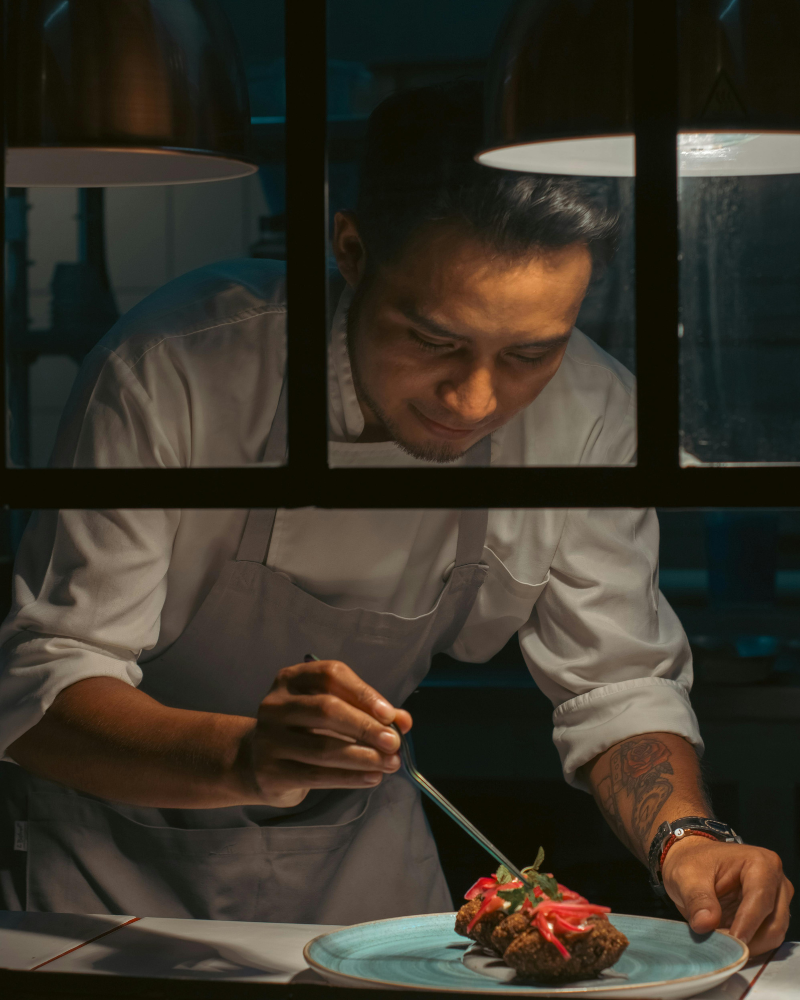

Le Chef Kenji Tanaka
De Kyoto à Lyon, un parcours d'exigence au service d'une cuisine japonaise sincère et contemporaine.

Une vocation née à Kyoto
Né près de Kyoto, Kenji Tanaka grandit entre les étals du marché de Nishiki et la cuisine de sa grand-mère, où il apprend très tôt la rigueur du geste et le respect du produit brut. Formé pendant huit ans auprès de maîtres sushi traditionnels, il y acquiert une discipline exigeante : celle du silence, de la précision, et du temps long.
Arrivé en France en 2014, il rejoint plusieurs tables étoilées lyonnaises où il découvre une autre exigence, celle de la gastronomie française — le travail des sauces, des cuissons lentes, des produits du terroir. De cette double formation naît une cuisine hybride et personnelle, fidèle à ses racines japonaises mais nourrie des produits et du terroir de la région lyonnaise.
— Kenji Tanaka
Un chemin entre deux cultures
Débuts à Kyoto
Apprentissage auprès de maîtres sushi traditionnels dans le quartier de Gion, formation aux techniques ancestrales du poisson cru et du riz vinaigré.
Chef de partie à Tokyo
Perfectionnement dans une maison spécialisée en cuisine kaiseki, où il approfondit l'art de la saisonnalité et de la présentation.
Arrivée en France
Installation à Lyon, immersion dans la gastronomie française au sein de plusieurs cuisines étoilées de la région.
Chef exécutif
Prise de responsabilité en cuisine, développement d'une identité culinaire propre mêlant précision japonaise et produits locaux.
Ouverture de Kōhaku
Naissance du restaurant Kōhaku sur la Presqu'île de Lyon, aboutissement d'une vision culinaire mûrie pendant près de vingt ans.
Trois principes, une exigence
Au-delà de la technique, une cuisine guidée par des valeurs simples et constantes.
Saisonnalité
La carte évolue au rythme des saisons et de l'arrivage, jamais l'inverse. Chaque produit est servi au moment de sa pleine expression.
Circuits courts
Légumes de maraîchers de la région lyonnaise, poissons sélectionnés directement auprès de pêcheurs partenaires, viandes d'élevages locaux.
Précision du geste
Chaque découpe, chaque cuisson, chaque dressage obéit à une discipline héritée des maisons traditionnelles de Kyoto.
La salle et la cuisine
Un écrin sobre et feutré, pensé pour sublimer le travail en cuisine ouverte.
Venez découvrir l'univers du Chef Tanaka
Sur réservation, du mardi au samedi, en service midi et soir.
Réserver une table